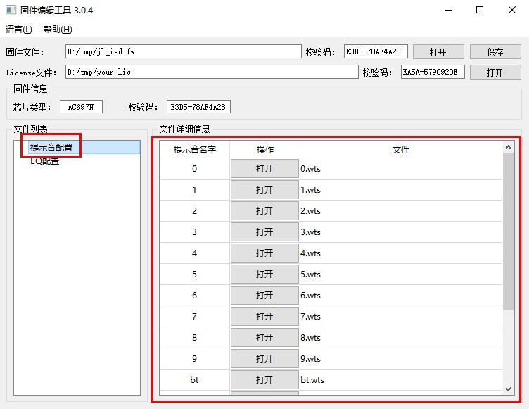
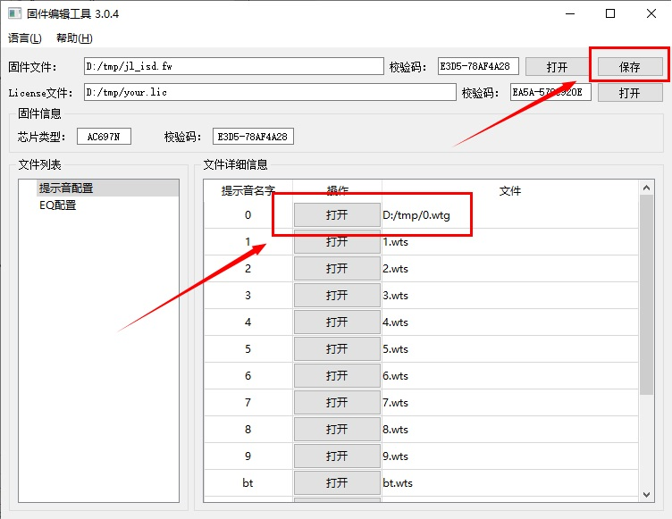
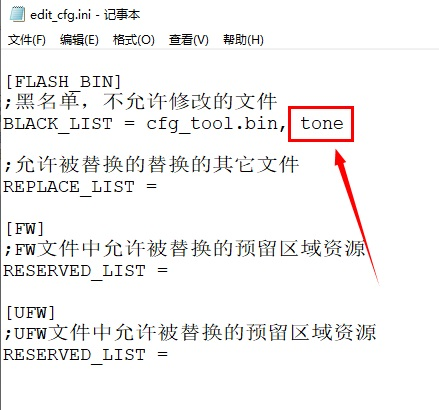
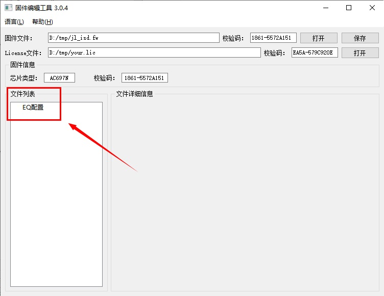
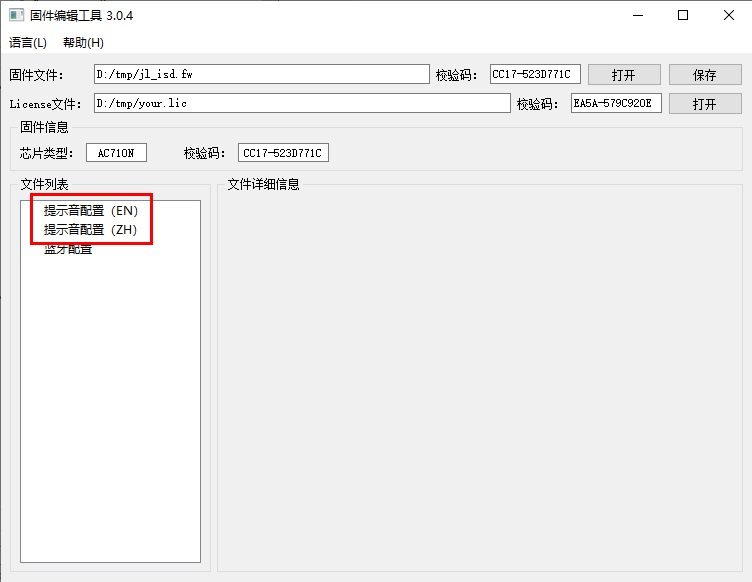
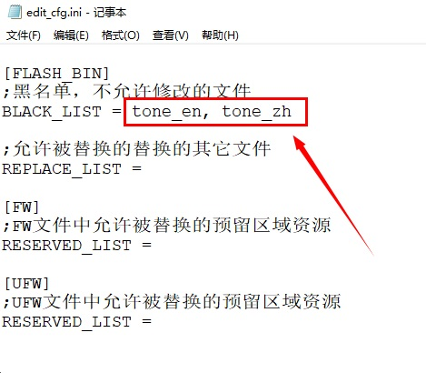

1.2.4. 提示音替换
1.2.4.1. 替换提示音配置数据
在选择了正确的license文件后， 可以通过替换提示音的数据的方式来修改提示音。如下图：

点击提示音操作按钮打开，选择新的提示音文件后，再点击右上角的保存按钮，保存提示音数据，并生成新的固件文件。如下图：

1.2.4.2. 隐藏提示音配置
如果不希望选择的固件文件中的提示音被修改， 可将提示音文件名tone设置到edit_cfg.ini文件的黑名单列表后， 重新生成固件文件， 如下图：

重新生成固件文件后，提示音配置将不显示在文件列表中。如下图：

1.2.4.3. 多国语言提示音
如果SDK支持了多国语言提示音，那么加载固件文件后，界面上会显示各个语言提示音配置。如下图：

如果不希望支持多国语言的固件文件中的提示音被修改，配置提示音文件名tone_en和tone_zh到edit_cfg.ini文件的黑名单列表后, 重新生成固件文件，如下图：

重新生成固件文件后， 多国语言的提示音配置，将不显示在文件列表中。